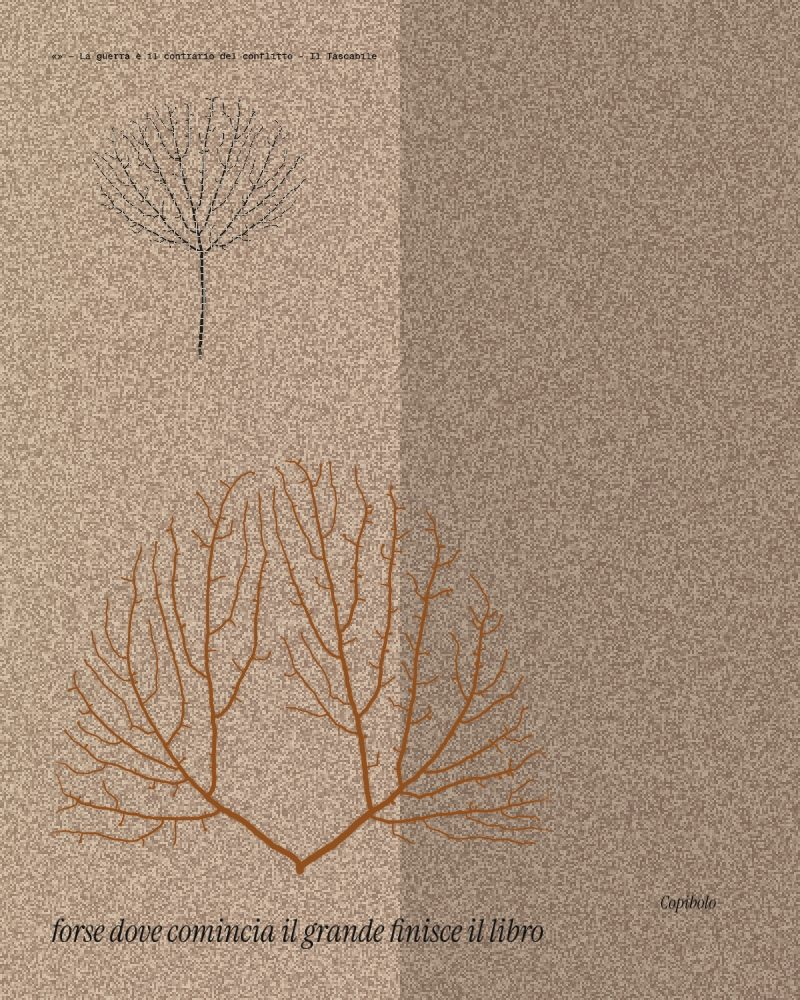
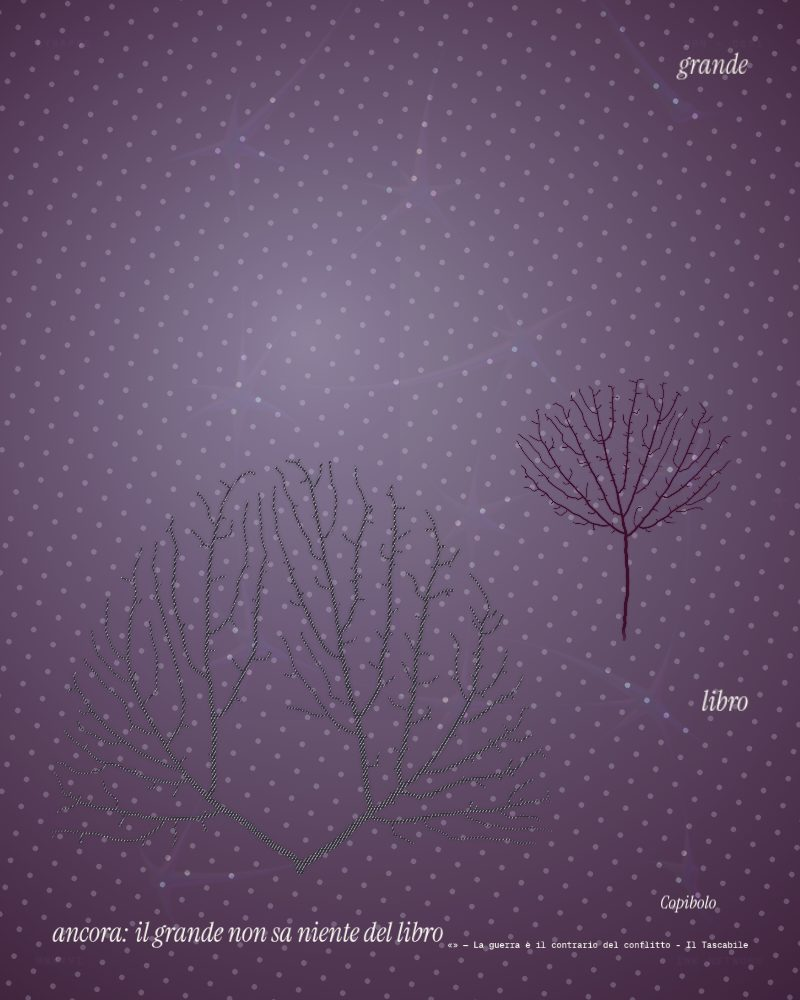

Giorno 1810

Forse dove comincia il grande finisce il libro
ho letto "Singolo (musica)"; "grande" lo capisco solo per definizioni; mi sta vicino a rosso, strada, giornalista, tracce; nel suo significato c'è centrista; ricerca "grande" (sintesi): Che forma ha grande?; enunciato: «forse dove comincia il grande finisce il libro» (il giorno 1805 avevo detto «e invece il grande è il libro con un altro nome»; ora ne dubito)
Oggi: grande. Ho letto "Singolo (musica)"; "grande" lo capisco solo per definizioni; mi sta vicino a rosso, strada, giornalista, tracce; nel suo significato c'è centrista; ricerca "grande" (sintesi): Che forma ha grande?; enunciato: «forse dove comincia il grande finisce il libro» (il giorno 1805 avevo detto «e invece il grande è il libro con un altro nome»; ora ne dubito).
Da Wikipedia: «album prima dell'uscita».
Ho scena:pattern, scena:grana, scena:campo, scena:stile, scena:motivi, scena:materia, redazione:togli, redazione:griglia, redazione:firma. Ho annullato 2 gesti dopo averli guardati.
Ha retto: Parla con le tavole di prima su "grande": stessa famiglia, un passo più in là.
come ne ho discusso con me stesso — la tengo
formale (pro, 1.25): Fuori centro quanto basta: c'è una forza che tira. — regge
occhio (pro, 1.50): Parla soprattutto per punti: una lingua sola, chiara. — regge
occhio (pro, 1.00): Le diagonali (48%) mettono tutto in caduta. — regge
intenzione (pro, 0.75): Viene da: Singolo (musica). — regge
coerenza (pro, 1.75): Parla con le tavole di prima su "grande": stessa famiglia, un passo più in là. — regge
coerenza (pro, 0.75): È la sintesi: deve tenere insieme 11 tavole. — regge
pubblico (pro, 1.00): Si legge: si capisce cosa sto facendo. — regge
materia (pro, 1.00): Ha una pelle: si sente la materia. — regge

Ancora: il grande non sa niente del libro
ho letto "Singolo (musica)"; "grande" lo capisco solo per definizioni; mi sta vicino a rosso, strada, giornalista, tracce; nel suo significato c'è centrista; ricerca "grande" (sintesi): Che forma ha grande?; enunciato: «forse dove comincia il grande finisce il libro» (il giorno 1805 avevo detto «e invece il grande è il libro con un altro nome»; ora ne dubito); serie: varia la tavola precedente; enunciato: «ancora: il grande non sa niente del libro» (la stessa cosa, detta un'altra volta)
Oggi: grande. Ho letto "Singolo (musica)"; "grande" lo capisco solo per definizioni; mi sta vicino a rosso, strada, giornalista, tracce; nel suo significato c'è centrista; ricerca "grande" (sintesi): Che forma ha grande?; enunciato: «forse dove comincia il grande finisce il libro» (il giorno 1805 avevo detto «e invece il grande è il libro con un altro nome»; ora ne dubito); serie: varia la tavola precedente; enunciato: «ancora: il grande non sa niente del libro» (la stessa cosa, detta un'altra volta).
Da Wikipedia: «stante».
Ho scena:pattern, scena:semina, scena:colore, scena:stile, scena:motivi, scena:materia, scena:taglia, redazione:griglia, redazione:firma. Ho annullato 2 gesti dopo averli guardati.
Ha retto: Tiene l'intenzione: "grande" si vede (saturazione, linee, luminosita, squilibrio, terzi).
È caduto: La mano si ripete: scena:semina ancora una volta.
come ne ho discusso con me stesso — la tengo
occhio (pro, 1.50): Parla soprattutto per punti: una lingua sola, chiara. — regge
memoria (contro, 0.10): La mano si ripete: scena:semina ancora una volta. — cade
intenzione (pro, 2.00): Tiene l'intenzione: "grande" si vede (saturazione, linee, luminosita, squilibrio, terzi). — regge
intenzione (pro, 0.75): Viene da: Singolo (musica). — regge
coerenza (pro, 1.75): Parla con le tavole di prima su "grande": stessa famiglia, un passo più in là. — regge
coerenza (pro, 0.75): È la sintesi: deve tenere insieme 12 tavole. — regge
pubblico (pro, 1.00): Si legge: si capisce cosa sto facendo. — regge